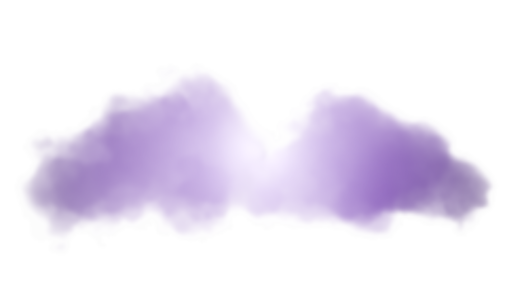

Moved
RedirectingNew address
This page has a new home. You'll be sent there automatically in a moment — or follow the link below.
cassidyprather.github.io/cass-website/Redirecting in 10 seconds…


This page has a new home. You'll be sent there automatically in a moment — or follow the link below.
cassidyprather.github.io/cass-website/Redirecting in 10 seconds…